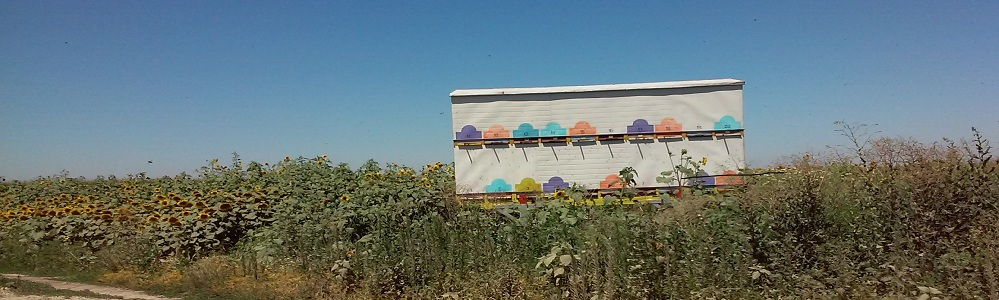
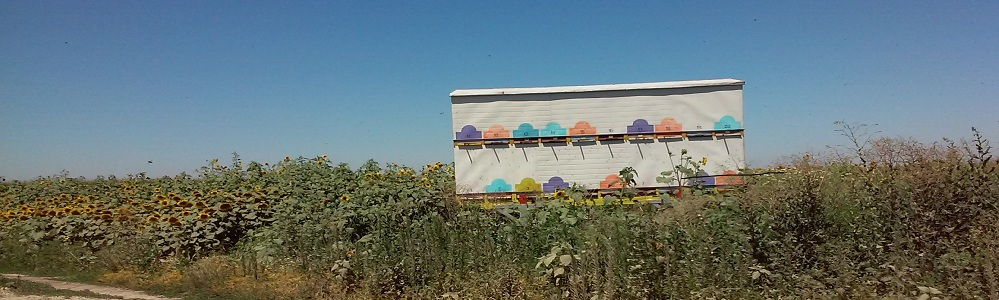

Pčelarsko gazdinstvo Fridl
 



SUNCOKRETOV MED
Suncokretov med je zlatnožute boje, prijatnog ukusa i mirisa. Izrazito se brzo kristalizuje.
Konzumiranje kristalizvanog meda se preporučuje zbog toga što se postapenim otapanjem kristala meda, preko podjezičnih žlezda, unose sve korisne materije iz meda u čovekov organizam.
Ovaj med poseduje antimikrobna svojstva i ima hranljive i profilatičke osobine. Suncokretov med je dobar kod oboljenja disajnih organa, naročito sinusa i grla, zatim preporučuje se srčanim bolesnicima, ali i starijim osobama kojima je potrebna dodatna energija i odmor, kao i deci u razvoju. Zbog prirodnog bogatstva polenom preporučuje se kao prevencije kod problema sa prostatom.

Copyright©2016AleksandraFridl